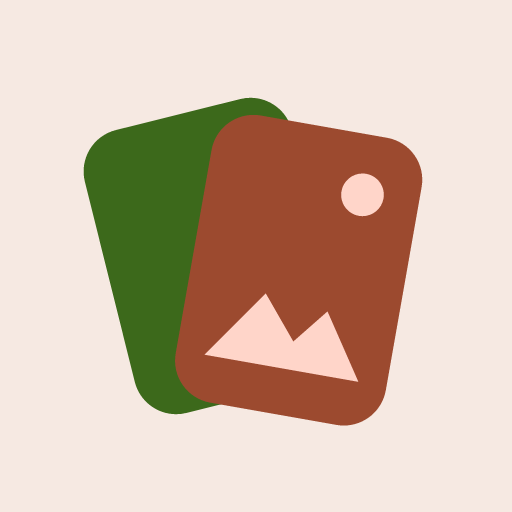

Política de privacidad
Swipeclean · Vigente desde el 7 de octubre de 2026
1. Quién es responsable
Swipeclean es una app desarrollada por Bane. Si tienes preguntas sobre esta política, escríbenos a gonzalo000415@gmail.com.
2. Tus fotos y videos
Swipeclean te muestra tus fotos y videos para que decidas cuáles conservar y cuáles borrar. Todo eso ocurre dentro de tu teléfono:
- No copiamos, subimos ni compartimos tus fotos o videos con nadie, tampoco con nosotros.
- Los datos que se muestran de cada foto (fecha, tamaño, álbum, modelo de cámara, etc.) se leen del propio archivo en tu teléfono y no salen de él.
- No leemos la ubicación GPS de tus fotos.
- Nada se borra sin que lo confirmes. Lo que borras va primero a la papelera de Android, donde puedes recuperarlo durante 30 días (en Android 11 o superior).
3. Permisos que usa la app
| Permiso | Para qué |
|---|---|
Fotos y videosREAD_MEDIA_IMAGES, READ_MEDIA_VIDEO,
READ_MEDIA_VISUAL_USER_SELECTED |
Mostrarte tus fotos y videos para que los ordenes. Puedes dar acceso solo a algunos. |
Almacenamiento (Android 12 o anterior)READ_EXTERNAL_STORAGE,
WRITE_EXTERNAL_STORAGE (solo Android 10 o anterior) |
Lo mismo en versiones antiguas de Android, y borrar lo que tú confirmes (en esas versiones no existe la papelera). |
Administración de multimedia (opcional)MANAGE_MEDIA |
Si la activas en Ajustes, mover a la papelera lo que elijas sin un cuadro de confirmación extra de Android. Puedes desactivarla cuando quieras. |
InternetINTERNET, ACCESS_NETWORK_STATE |
Solo para mostrar el anuncio. Tus fotos nunca se envían por internet. |
ID de publicidadAD_ID |
Lo usa Google AdMob para los anuncios (ver punto 5). |
4. Qué se guarda en tu teléfono
Para que no pierdas tu progreso, la app guarda solo en tu teléfono:
- Qué fotos ya revisaste y qué decidiste con cada una (se guarda el número interno de la foto, nunca la foto).
- Tus preferencias, por ejemplo si ya viste el tutorial.
Esta información no se envía a ningún lado y se borra por completo al desinstalar la app o al usar “Borrar datos” en los Ajustes de Android.
5. Anuncios (Google AdMob)
Swipeclean muestra un solo anuncio, en la pantalla final, a través de Google AdMob. Para mostrarlo, medirlo y prevenir fraudes, Google puede recopilar y procesar datos como:
- El ID de publicidad del dispositivo y otros identificadores del dispositivo.
- La dirección IP (de la que se puede deducir una ubicación aproximada).
- Información sobre cómo interactúas con el anuncio y datos técnicos y de diagnóstico.
Estos datos los procesa Google según su propia política. Puedes leer cómo los usa en “Cómo usa Google la información de los sitios o apps que usan sus servicios” y en la Política de privacidad de Google.
Consentimiento: en los países donde la ley lo exige (por ejemplo, en el Espacio Económico Europeo y el Reino Unido), la app te pide permiso antes de cargar cualquier anuncio, usando la herramienta de consentimiento de Google. Puedes cambiar tu elección desde “Privacidad de anuncios”, en la pantalla final.
Cómo limitar los anuncios personalizados: en tu teléfono, ve a Ajustes → Google → Anuncios (o Ajustes → Privacidad → Anuncios) y borra o restablece tu ID de publicidad.
6. Niños
Swipeclean no está dirigida a menores de 13 años y no recopila a sabiendas datos de niños.
7. Seguridad
Como tus fotos no salen del teléfono, no hay copias en ningún servidor que puedan filtrarse. La comunicación del anuncio con Google se hace de forma cifrada.
8. Cambios en esta política
Si cambiamos esta política, publicaremos la nueva versión en esta misma página con su nueva fecha.
9. Contacto
¿Dudas? Escríbenos a gonzalo000415@gmail.com.